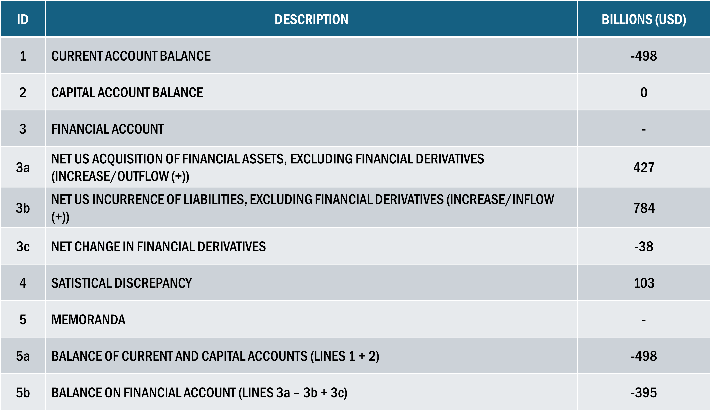
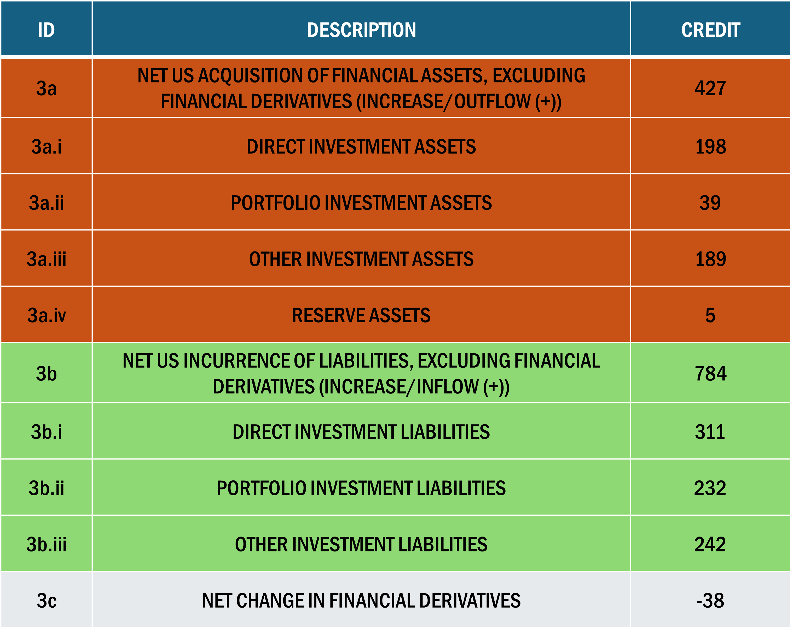
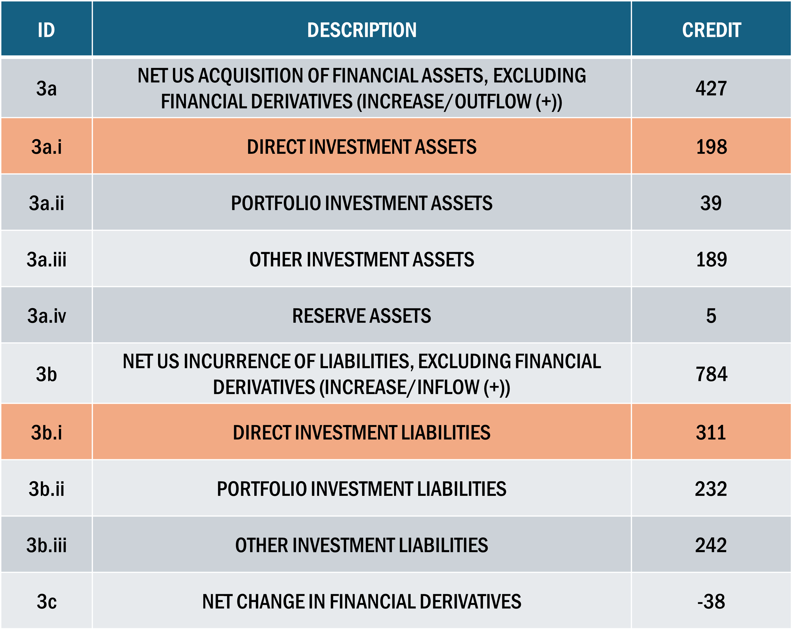
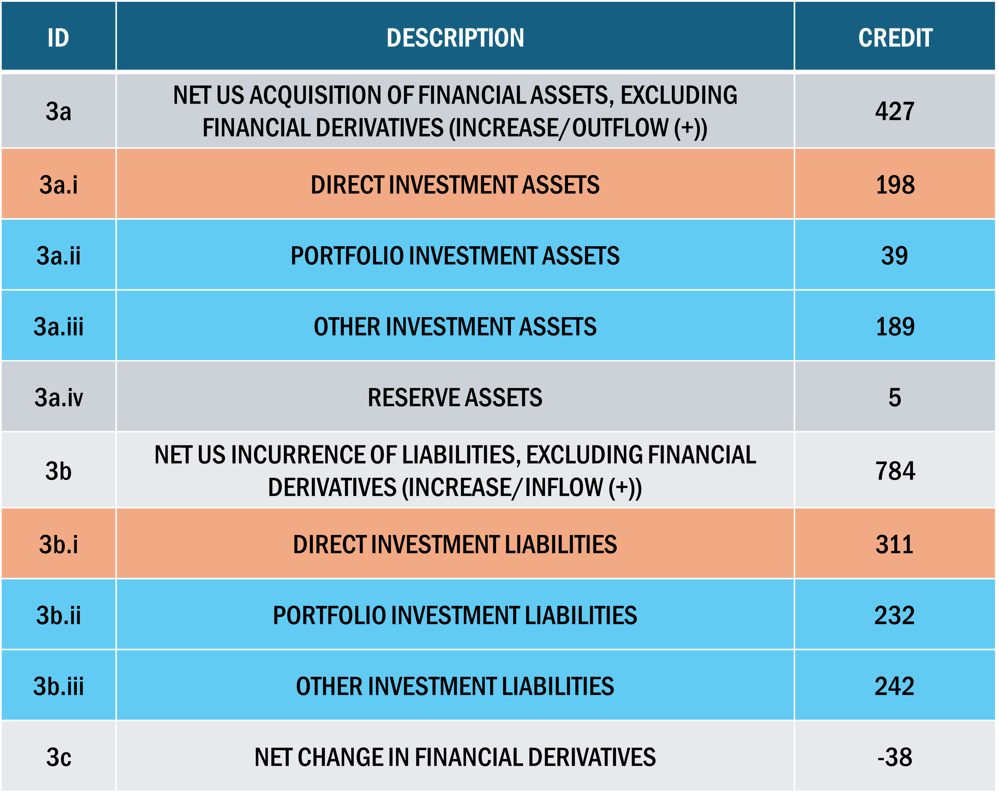

Interdependence
The Current, Capital, and Financial Accounts are interdependent
The Current and Capital Accounts measure the flows of goods, services, and transfers between a country and the rest of the world
The Financial Account measures the net flows of asset purchases and sales
Since each element in the Current Account must include a financial transaction:
- Current plus Capital Account must equal the Financial Account
Interdependence of Accounts
A negative Current plus Capital account \(\Rightarrow\) net borrowing by the home country
It must show up in the Financial Account as net borrowing as well
In 2019, the US lent abroad through the net acquisition of financial assets worth $427 bn
It also incurred liabilities or borrowed $784 bn from foreigners
Balance on financial account is the amount lent minus the amount borrowed plus the net change in derivatives
\[ \text{Financial Account} = 427 - 784 + (-38) = 395 \]
Statistical Discrepancy

Why is Current + Capital \(\; \neq \;\) Financial?
Statistical Discrepancy
Why is Current + Capital \(\; \neq \;\) Financial?
It is impossible to record all transactions and ensure that they are accurately measured
The amound of net lending or borrowing on the current and capital accounts rarely matches the amount implied by the financial account balance
The Statistical Discrepancy is the size of the measurement error
While the Current and Financial Accounts are mirror images of each other, a large share of a nation’s gross financial account transactions is not in response to the current account of flows of goods, services, or income
Discrepancy Example
Suppose a London-based company buys stock in a Chilean firm, and lends money to the government of Thailand
Note: This has nothing to do with the movements of goods and services. These are purely financial transactions and must have a net value of zero.
Net value of zero is because the purchase of an asset is simultaneously the sale of an asset of equal value
- If a Canadian citizen buys shares in the Mexican stock market (capital outflow), they must sell Canadian dollars or some other asset (capital inflow)
As a result, the financial account is a complete picture of net flows of financial assets during the year
Financial Risks
Certain types of financial flows introduce instability/risk
Some financial flows are very mobile, representing short-run tendencies
Financial flows are often vehicles for transmitting a financial crisis from one country to another
The degree of mobility of financial flows and the potential of some flows to introduce a large element of volatility into an economy have turned the type of flows that a country receives into a major issue
Financial Subcomponents

The 2019 financial account for the US, divided into seven subcategories representing the main components of outflows and inflows, or net assets acquired (outflow) and net liabilities incurred (inflow)
Financial Subcomponents

3a.i represents the purchase of real property outside the US by US residents and business
3b.i represents asset purchases in the US by foreign residents and businesses
Financial Subcomponents

In general, FDI varies considerably and is often linked to mergers
Once made, however, FDI is probably less likely to leave a country, particularly when compared to the next category of items in lines 3a.ii, 3a.iii, 3b.ii, 3b.iii